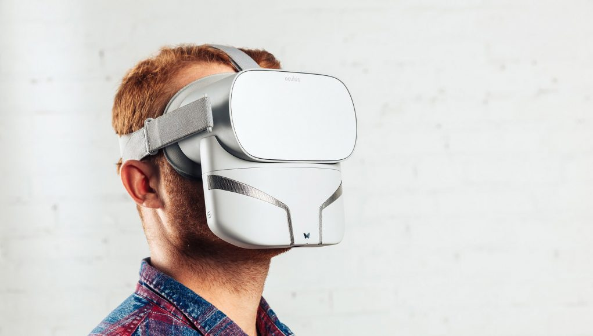

A comprehensive view of the Oculus Go
This review is an extensive and in-depth insight into the pros and cons of owning an Oculus Go over the alternatives. At a much lower price point than the Oculus Rift, the Go has a few
drawbacks.
No Oled display, no headphones and no space positioning. However, the resolution on the go is higher than the Rift giving a clearer, cleaner image. Perfect for media
consumption.
An in-detail talk about the Oculus Quest
After an explanation of the latest hardware Oculus intend on releasing Adam Savage Tested have a chat with Product Manager Sean Liu about the hardware inside the
up and coming Oculus Quest.
The Quest will receive a resolution upgrade to 1440-1600 whilst keeping the Oled colours Rift owners love as well as making sensors redundant with
sensors built into the headset. Oh, and it's cordless!
Chronos is a unique third-person experience
Created by Oculus, Chronos is another take on what can be achieved with VR technology. The game is a third-person, room-based RPG with stunning 3D visuals and well-designed combat mechanics.
The concept is also original. As your character dies throughout the game he advances in age shuffling his abilities from melee combat to magic. Chronos is a therapeutic
gaming experience that should not be missed!
Common Questions
Is VR expensive?
It's actually only as expensive as you want it to be. There are many options available at a wide range of price. Check out our Headsets page for more information.
What headset should I buy?
It entrely depends on personal preference. Every headset has pros and cons. It's all about what's right for you. Take a look at our Head to Head section for more information.
How much content is available?
Many AAA developers have released titles. Thousands of huge games are waiting for you! Take a look at our Games page for more information.
News
Ambitious Kickstarter project Feelreal intends to add Smell & Haptics to your headest
Feelreal contains what the company calls a “scent generator” that holds replaceable cartridges with nine individual aroma capsules, generating scents such as burned rubber, gunpowder odor, lavender and mint.
"The unit also incorporates a few haptic devices including an ultrasonic ionizing system for water mist, micro-heaters for heat sensation, micro-coolers for wind, and haptic motors for vibration."
Oculus Quest set for 2019 launch
Today the invitive headset popped up in FCC listings, indicating that the headest is on track for a Spring 2019 release.
The FCC is tasked with certifying products with electromagnetic emissions
to be safe and compatible with regulations. The FCC's public documents indicate the headest will support both 2.4Ghz and 5Ghz WiFi. 5Ghz supporting a much higher bandwidth might be the key to a healthy resolution
although matching the Rift's 1080-1200 per eye is still doubtful.
Valve Promotes Latest Knuckles Controller from Prototype to Dev Kit
Having publicly shown off the Knuckles VR controllers for the first time all the way back in 2016, development of the device has seemed in the intervening time. That is until 2018 when the company became a
little less secret and began showing off more significant progress with the EV, EV2, and EV3 Knuckles prototypes.
This week Valve revealed the latest version, Knuckles ‘DV’, which company is now referring
to as a “dev kit” while calling the EV-series “prototypes.” Changes from EV3 to DV are largely refinements to the feel of the controller, along with tweaks which seem focused on bringing the fit and finish up to
consumer-ready levels.
Games

A thrilling fast paced FPS. The perfect introductory game
Often the first thing people would like to do when entering VR is shoot some stuff! To feel like weapons are actually in your hands. To feel the freeing effect of a 3D FPS.
Robo Recall does just that.
The goal in this game is simply to kill or 'recall' as many robots as possible. As the player roams around the city landscape the tasks vary which keeps the action fresh throught.
Definately a game to start with!
Skyrim VR is definately worth your time
Yet another encarnation of Skyrim you may be thinking. However, VR brings more to the table than any mod ever could. This game is simply beautiful in fluid 3D VR especially with mods.
With the
ability to use your characters hands as if they're your own, to look around the world like never before is refreshing enough to give the game another playthrough. If you haven't attempted Skyrim in the past though
you absolutely must venture this open world. Skyrim has arguably the most content of any VR game at the moment. Buckle in for an adventure like no other.
A calm, spiritual, soul searching experience
In this simplistic and honest game pitches its self to you as a time to reflect or question ones self. In this VR experience you're static as you look around a given room. Each room with question about yourself
is presented to you. As you begin to think of your answer white glowing spheres slowly apear. Each sphere being another persons recorded anonymous answer. It's a lovely experiance listening to other people's..
honesty.
The artwork is beautiful with a cartoonish style which aids the fantasy feel and soundtrack. The abiance is calming as you listen to others talk. The experiance isn't long but well worth it for
a free game!